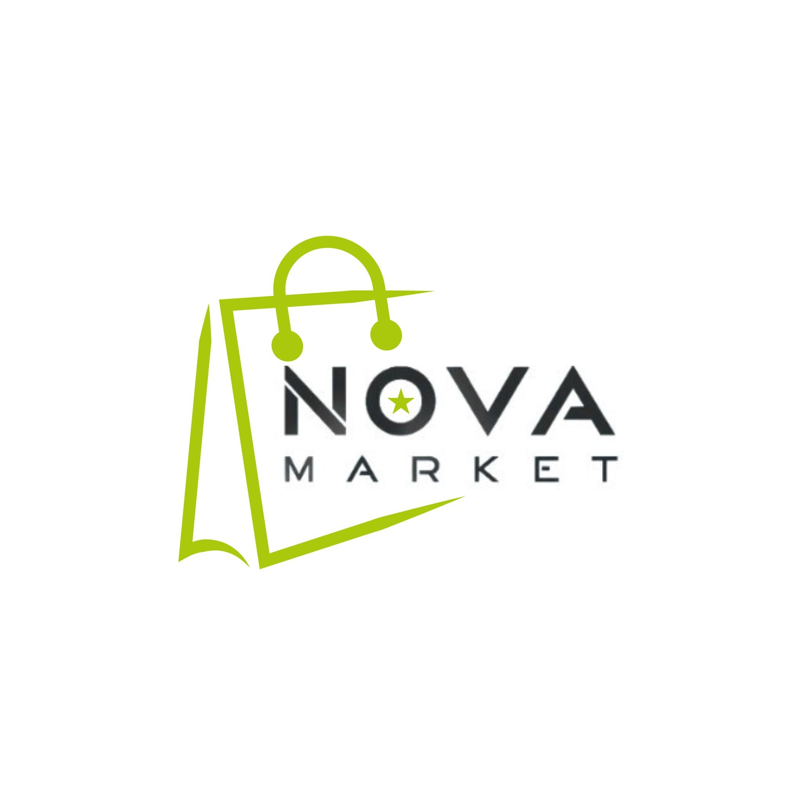

<mat-toolbar color="primary" class="header-toolbar">
  <div class="logo-container">
    
  </div>

  <span class="system-name">NovaMarket S.A</span>

  <span class="spacer"></span>

  <button mat-raised-button color="accent" routerLink="/login">
    Iniciar Sesión
  </button>
</mat-toolbar>